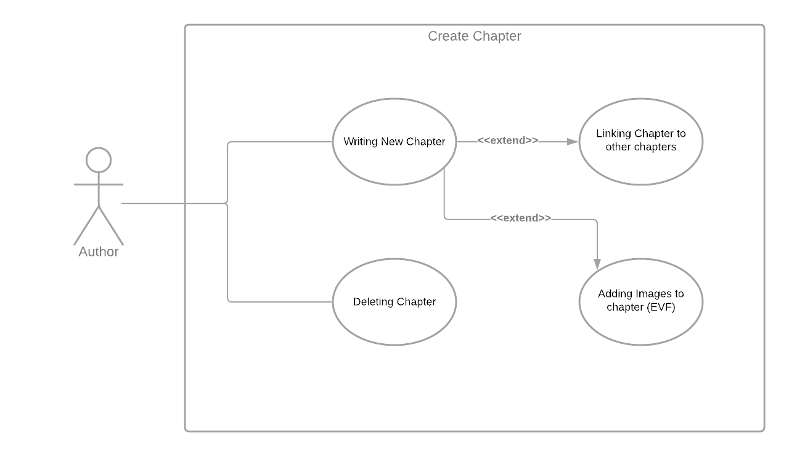
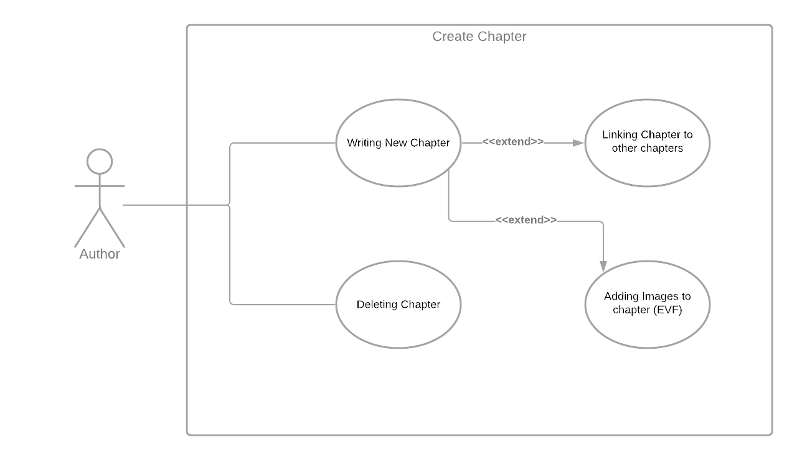

MVF-1 Creating Chapters
User will be able to create new Chapters and will be able to enter text into the block which will be saved.
 

User Story
The author needs to be able to write the chapter and have multiple formatting options available to them, from this screen they must also be able to link this chapter to others in multiple ways. A author can also delete a open chapter from here and as part of an EVF be able to link photos to the chapter.
Validation Testing
- Can the user type in a story and it saves?
- Can the user discard a chapter and it removes it form the database?
- When the user links the chapter is this change reflected in the database?
- Does the program warn the user if they try to exit without saving?